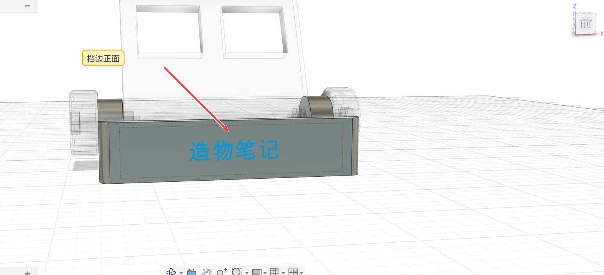
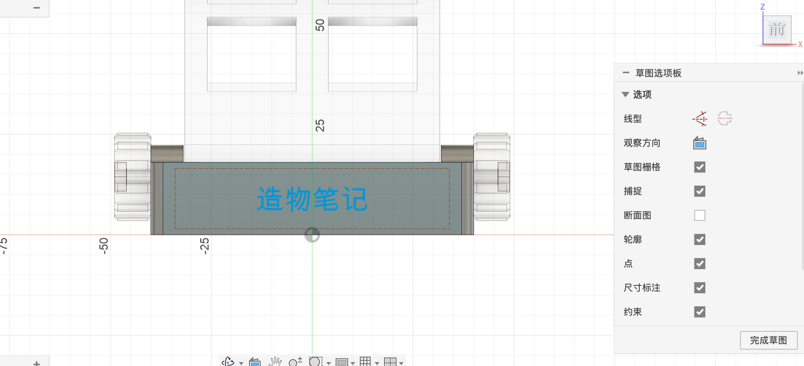
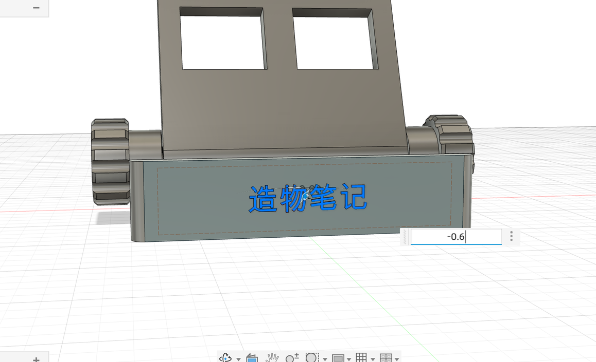
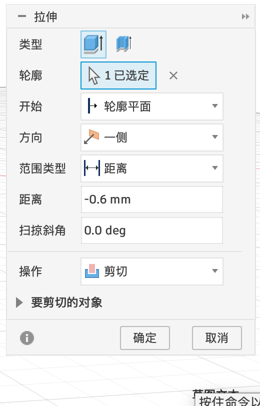
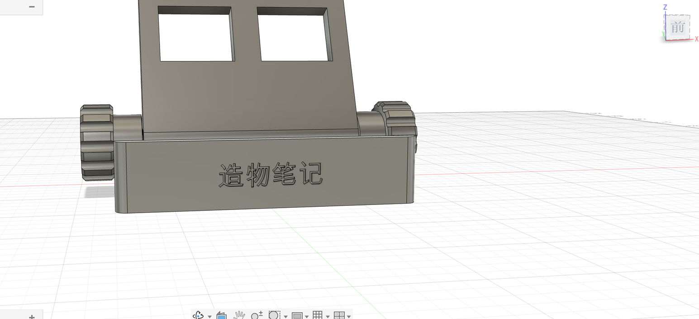
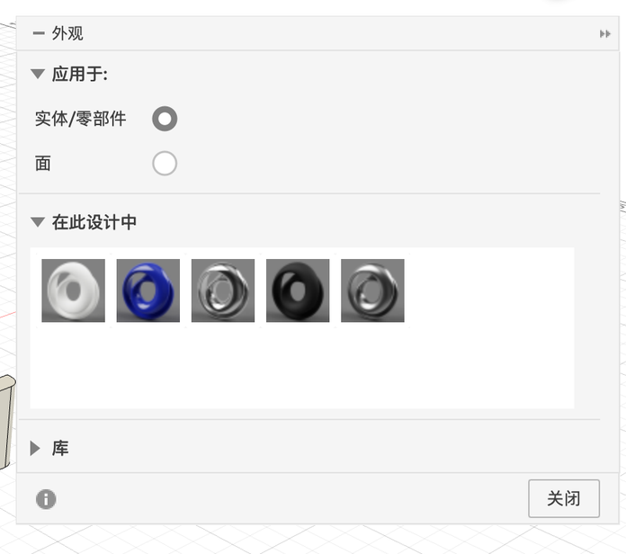
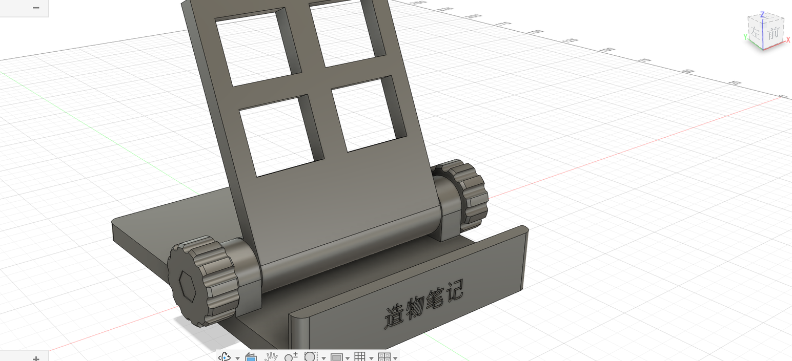

P7 刻字与外观
在挡边正面刻上字，再给每个零件换个颜色。刻字用草图文本加拉伸剪切；颜色用外观。这一页是最适合发挥创意的地方。
第 1 步：写字#
- 激活底座。「创建草图」→ 点挡边的正面（朝前的那个面）。

- 「创建 → 文本」：在挡边正面上点两下拉出一个文本框，几乎占满挡边。
- 对话框里输入
造物笔记（换成你想写的字），字体选 PingFang SC（Windows 选“微软雅黑”等中文字体），高度7，水平、垂直都居中。点「确定」，「完成草图」。

文本对话框每一项的含义见 1.1 写字。
第 2 步：刻进去#
- 按 E，点文字（整段文字会一起选中）。
- 距离输入
-0.6，往挡边里面刻，「操作」是「剪切」。点「确定」。



第 3 步：外观（颜色和材质）#
- 「修改 → 外观」（快捷键 A）。
- 「应用于」选「实体 / 零部件」（整个零件换颜色）。
- 展开「库」，在搜索框里搜
塑料，把想要的外观拖到画布上的零件上。

外观
| 选项 | 含义 |
|---|---|
| 应用于 · 实体 / 零部件 | 拖上去时整个实体（或零部件）换外观 |
| 应用于 · 面 | 只给拖到的那个面换外观，比如只把刻字的凹槽涂成别的颜色 |
| 在此设计中 | 本设计里已经用过的外观。右键可以编辑（改颜色、粗糙度）或替换 |
| 库 | Fusion 自带的外观库：塑料、金属、木材、玻璃、油漆……可以搜索 |


图 P7-7底座 塑料 - 粗面(白色)、靠背 塑料 - 有光泽(蓝色)、旋钮 塑料 - 粗面(黑色)、螺丝螺母 不锈钢 - 抛光（拖动中间的竖线对比）